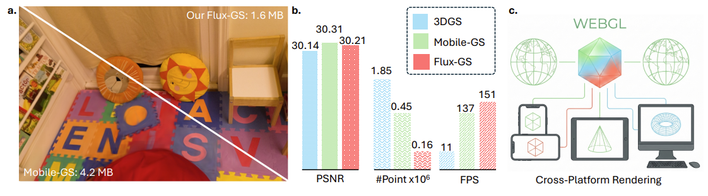
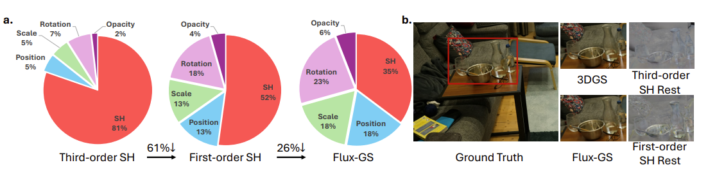
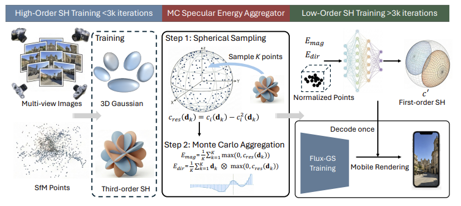

Recent advances in 3D Gaussian Splatting have demonstrated unprecedented success in novel view synthesis. However, the substantial inference and storage overhead driven by high-order Spherical Harmonics (SH) are primary bottlenecks for mobile platforms. In this paper, we present Flux-GS, a real-time Gaussian Splatting method designed to achieve high-fidelity rendering with significantly reduced overhead for resource-constrained mobile platforms. We first propose a Monte Carlo Specular Energy Aggregator, sampling third-order radiance residuals and aggregating specular energy into a compact latent space. In this way, our method effectively preserves visually salient lighting features in lower-order bands without expensive distillation or pre-training. To mitigate the high-frequency details lost during compression, we introduce an Attribute-Conditioned SH Enhancement module. This module predicts Gaussian-aware offsets based on intrinsic Gaussian attributes, which enhance the first-order SH representation prior to inference, without extra inference costs. Furthermore, the original single-view gradient-based densification is prone to producing excessive Gaussians and overfitting to a certain view. We address these limitations by proposing a Multi-view Alpha-based Densification and Pruning strategy. By leveraging multi-view guidance, we ensure multi-view structure consistency and the precise removal of redundant primitives. Extensive experiments demonstrate that Flux-GS achieves substantial parameter reduction while maintaining competitive visual quality, offering a robust and scalable solution for real-time mobile rendering.

ab. Flux-GS achieves rendering quality comparable to both 3DGS [31] and the Mobile-GS, while reducing the number of Gaussian primitives and facilitating significantly higher FPS on the mobile with Snapdragon 8 Gen 3 GPU. c. The proposed Flux-GS utilizes WebGL to enable seamless cross-platform rendering.

Gaussian parameter distribution and Spherical Harmonic fidelity analysis. Left: Per Gaussian memory footprint across 3DGS variants. Flux-GS achieves significant compression (61% and 26% reductions) by optimizing Spherical Harmonics (SH) coefficients and decoupling SH into the base and view-independent components. Right: Qualitative comparison demonstrates that Flux-GS with only first-order SH can render high-fidelity high-frequency details comparable to 3DGS.

Overview of the Flux-GS framework. Our method optimizes third-order SH for the initial 3k iterations, then transitions via Monte Carlo Specular Energy Aggregator for high-frequency representation. With the first-order direction moments inherited from the original third-order SH, we leverage a neural network to aggregate these latents into first-order SH for rendering. During inference, the model requires only once decoding to obtain first-order SH, significantly reducing storage.